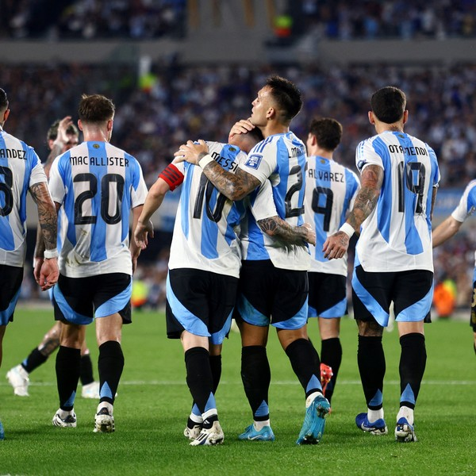

INICIO


NOTICIAS
HAT TRICK DE LEO Y EL INTER MIAMI ROMPE EL RÉCORD DE PUNTOS DE LA MLS
Leo anotó tres goles en los 34 minutos que disputó en el último partido de la temporada regular.
LEO DISPUTA EL ÚLTIMO PARTIDO DE LA TEMPORADA REGULAR

Leo disputa este sábado el último partido de la temporada regular de la MLS ante New England, días después del parón internacional con Argentina que cerró con un hat trick y dos asistencias ante Bolivia. El argentino vuelve al Chase Stadium para intentar romper el récord de puntos en la MLS tras proclamarse campeón de la Supporters Shield varias jornadas atrás.
LEO Y ARGENTINA BUSCAN AFIANZAR EL LIDERATO
La selección argentina y su capitán, Leo Messi, jugarán este martes ante Bolivia el décimo partido en la fase de grupos de las Eliminatorias Sudamericanas rumbo al Mundial 2026. La celeste y blanca lidera la clasificación con 19 puntos, tres más que Colombia (16), y cuatro más que Uruguay (15).
HAT TRICK Y DOS ASISTENCIAS DE LEO EN LA GOLEADA ANTE BOLIVIA
Leo hizo tres goles y repartió dos asistencias en la goleada de Argentina ante Bolivia 6-0, en partido de las Eliminatorias Sudamericanas rumbo al Mundial de 2026. Con este hat-trick, el capitán llegó a los 112 goles con la selección Mayor de Argentina. Por su parte, la celeste y blanca afianza el liderato de su grupo con 22 puntos, tres más que el segundo (Colombia).
ENTRENAMIENTO DE MESSI ANTES DEL ENFRENTAMIENTO ANTE ECUADOR
Lionel Messi, el astro argentino, se prepara intensamente para el crucial enfrentamiento contra Ecuador. En los días previos al partido, el capitán de la selección argentina ha demostrado su compromiso y liderazgo en las sesiones de entrenamiento. Trabajando junto a sus compañeros bajo las indicaciones del cuerpo técnico, Messi afina detalles tácticos y mejora su condición física para estar en su mejor nivel.